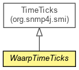

org.waarp.snmp.interf
Class WaarpTimeTicks
java.lang.Object
 org.snmp4j.smi.AbstractVariable
org.snmp4j.smi.UnsignedInteger32
org.snmp4j.smi.TimeTicks
org.waarp.snmp.interf.WaarpTimeTicks
org.snmp4j.smi.AbstractVariable
org.snmp4j.smi.UnsignedInteger32
org.snmp4j.smi.TimeTicks
org.waarp.snmp.interf.WaarpTimeTicks
- All Implemented Interfaces:
- Serializable, Cloneable, Comparable<org.snmp4j.smi.Variable>, org.snmp4j.asn1.BERSerializable, org.snmp4j.smi.AssignableFromLong, org.snmp4j.smi.AssignableFromString, org.snmp4j.smi.Variable
public abstract class WaarpTimeTicks
- extends org.snmp4j.smi.TimeTicks

Generic TimeTicks with update possibility for GoldenGate
- Author:
- Frederic Bregier
- See Also:
- Serialized Form
| Fields inherited from class org.snmp4j.smi.UnsignedInteger32 |
value |
| Fields inherited from class org.snmp4j.smi.AbstractVariable |
SMISYNTAXES_PROPERTIES |
| Methods inherited from class org.snmp4j.smi.TimeTicks |
decodeBER, encodeBER, fromMilliseconds, getSyntax, toMilliseconds, toString, toString |
| Methods inherited from class org.snmp4j.smi.UnsignedInteger32 |
compareTo, equals, fromSubIndex, getBERLength, hashCode, setValue, setValue, toInt, toLong, toSubIndex |
| Methods inherited from class org.snmp4j.smi.AbstractVariable |
createFromBER, createFromSyntax, equal, getBERPayloadLength, getSyntaxFromString, getSyntaxString, getSyntaxString, isException |
WaarpTimeTicks
public WaarpTimeTicks()
WaarpTimeTicks
public WaarpTimeTicks(long value)
setInternalValue
protected abstract void setInternalValue()
- Function to set the data before it is accessed by SNMP4J. This function
MUST call setValue(long)
setInternalValue
protected abstract void setInternalValue(long value)
- Function to set the data before it is accessed by SNMP4J. This function
MUST call setValue(long)
getValue
public long getValue()
- Overrides:
getValue in class org.snmp4j.smi.UnsignedInteger32
clone
public Object clone()
- Specified by:
clone in interface org.snmp4j.smi.Variable- Overrides:
clone in class org.snmp4j.smi.TimeTicks
isDynamic
public boolean isDynamic()
- Specified by:
isDynamic in interface org.snmp4j.smi.Variable- Overrides:
isDynamic in class org.snmp4j.smi.AbstractVariable
Copyright © 2009-2012 Waarp. All Rights Reserved.